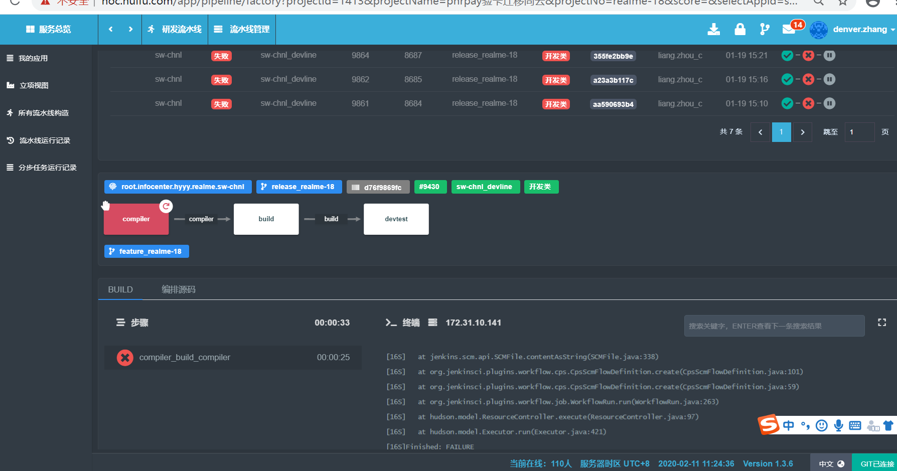
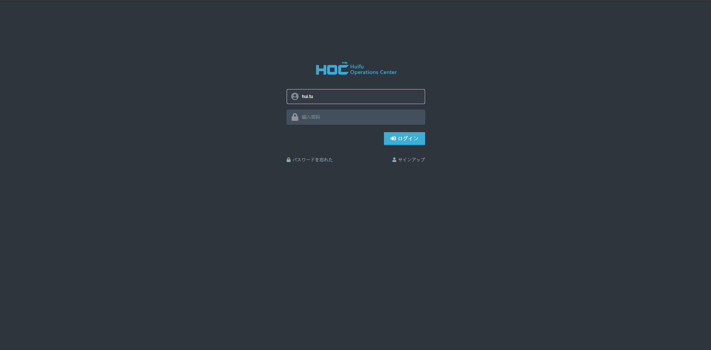
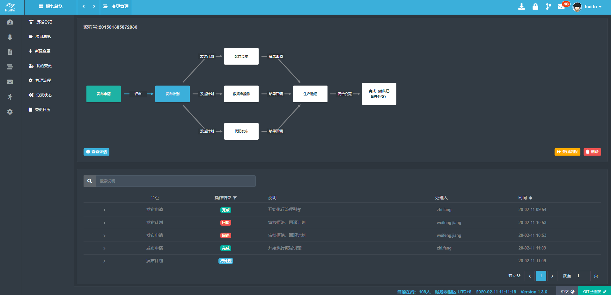
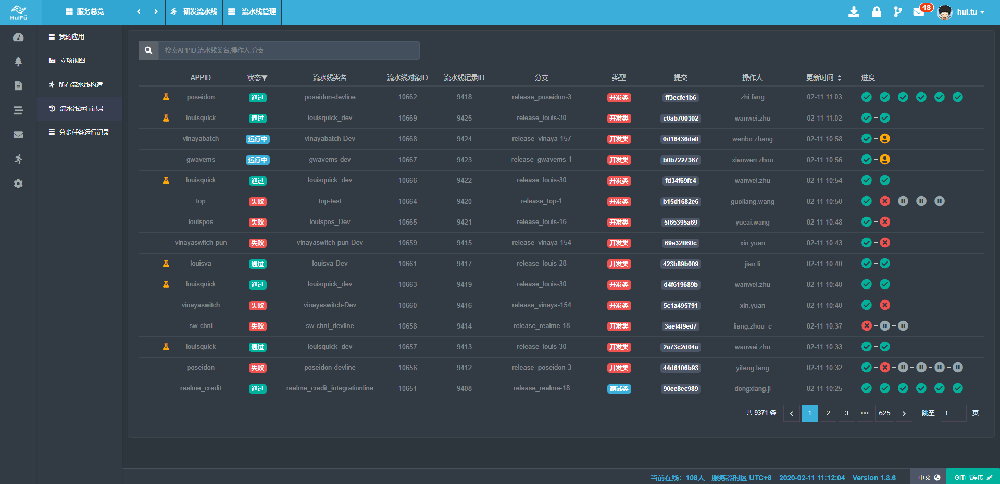
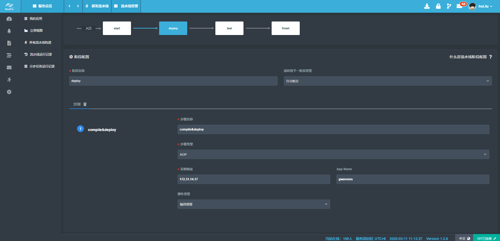
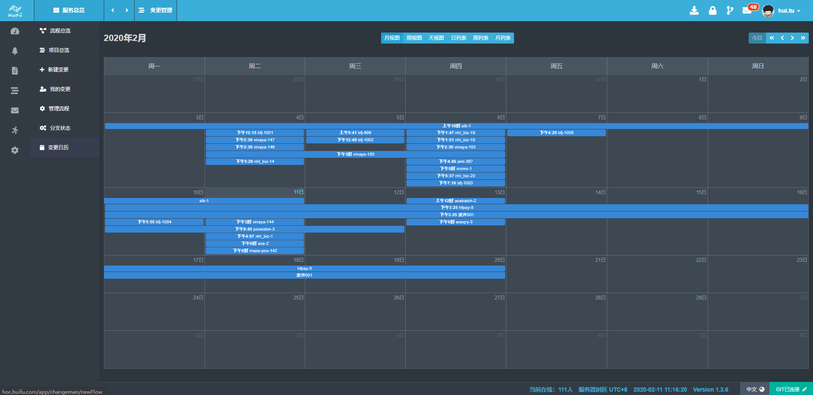
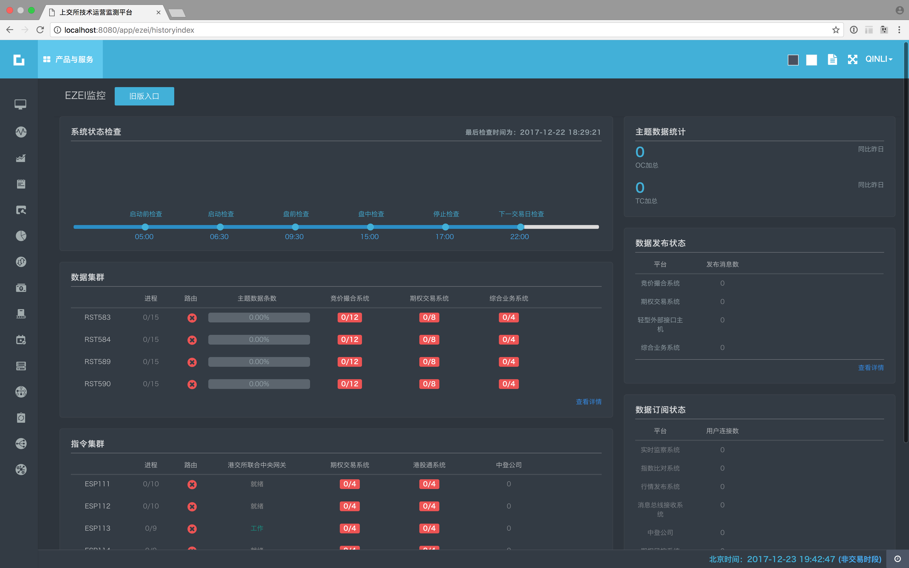
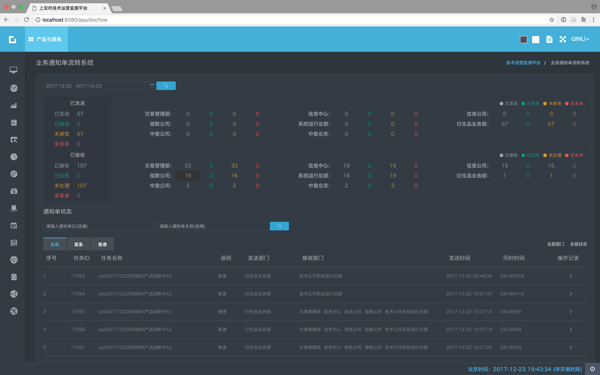
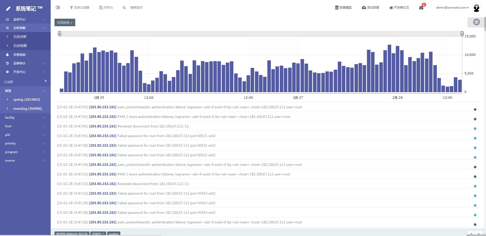
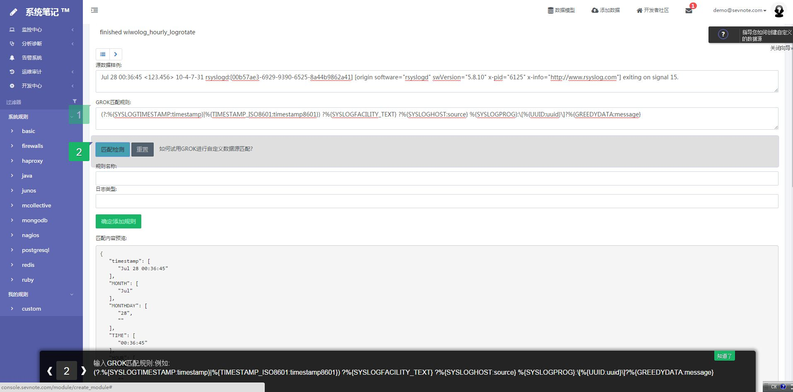

屠 輝

| 氏名 | 屠 輝 |
|---|---|
| ふりがな | ト キ |
| 性別 | 男性 |
| 現住所 | 日本.東京 |
| 電話番号 | +81-07047801102 |
| htu2@hawk.iit.edu | |
| 最終学歴 | アメリカイリノイ工科大学 修士 |
| 職務経歴 |
楽天グループ |
|---|---|
| 職務経歴 |
2010年03月 ～ 2013年11月 Easipass.net（正社員） 2013年11月 ～ 2015年04月 Ucloud.cn（正社員） 2015年04月 ～ 2016年10月 Tencent / JD.com（正社員）(企業買収,JDはTencentのeコマース事業を買収しました)（正社員） 2017年10月 ～ 2018年02月 上海証券取引所テクノロジー株式会社正社員） 2018年2月 ～ 2019年3月 ビリビリ動画(Bilibili.com)（正社員） 2019年03月 ～ Huifu Payment（正社員） |
自己紹介
10年以上のソフトウェア開発経験を持ち、バックエンドとフロントエンドの両方の開発に精通しています。クラウドプラットフォーム、企業向けWebアプリケーション、AI駆動ソリューションを含むシステムのゼロからの構築に豊富な専門知識を有しています。スケーラブルで信頼性が高く、パフォーマンスの優れたアーキテクチャを設計・実装することに長けており、大規模システムの非機能要件にも一貫して対応してきました。私の業務範囲は、フルスタックソフトウェア開発、インフラネットワーキング、サイト信頼性エンジニアリング（SRE）、DevOpsの実践を含み、システム設計から運用最適化までのライフサイクル全体をカバーしています。リレーショナルおよびNoSQLデータベース、コンテナ技術、Kubernetesに精通し、メッセージキュー、バッチ処理、キャッシングシステムを統合することで、高可用性、スケーラビリティ、保守性を実現してきました。また、自動化パイプライン、監視システム、フォールトトレラントなアーキテクチャを構築し、本番環境のパフォーマンスと信頼性を向上させた実績があります。
コアスキル:
プログラミング言語: Golang, Python, Javascript/TypeScript, Node.js, Java
クラウドプラットフォーム: AWS, GCP, AliCloud, Tencent Cloud
DevOpsおよび自動化ツール: Terraform, Consul, Ansible, Jenkins, Airflow, Prometheus, Grafana, ELK
幅広いスキルセットと、品質、スケーラビリティ、信頼性を重視した姿勢で、現代のソフトウェアシステムやビジネス要件に応えるソリューションを提供し続けています。
実務経験
【会社名】Huifu Payment
【在职时间】2019年3月〜至今
【仕事】シニアSRE開発エンジニア
【主な仕事】
1.会社の開発のデジタル変換を担当し、従来の作業モードをDevopsに変換し、プロジェクトの確立、開発、テスト、公式リリースから、会社の製品のアジャイルな反復効率を大幅に改善します。
2.6人の開発チームのリーダー
3.1日あたり100人のオンラインユーザーを含む軽量CI / CDシステムを開発しました（社内開発およびテスト）
4.会社のCMDBモデルを再設計し、サービスツリーモデルを構築し、1000台のサーバーの管理を簡単かつ整然としたものにしました。
5.変更管理システムを開発し、元の電子メール配信の従来のモデルを置き換え、会社のITSMエクスペリエンスを強化
6.すべての製品リリース構成を自動化できるように、集中構成管理システムを開発しました
【主な仕事の写真】
実行インターフェース

ログインインターフェース

すべてのサービス

ダッシュボード

サービスツリーCMDB

プロジェクトビュー

ITSMプロセス

CI / CIパイプラインリスト

リアルタイム端末表示

CI / CDクラスを作成

CI / CDプロジェクトビュー

ITSM変更の自動化

ITSMカレンダーの変更

【会社名】BILIBILI.COM
【在职时间】2018年2月〜2019年3月
【仕事】SRE開発エンジニア
【主な仕事】
1. BiliBili 3次元監視プラットフォームの全体的なアーキテクチャ設計と開発を担当します（メトリックタイプとログタイプを含む）。 Prometheusのメトリックデータ全体監視システムに基づいて、Golangは、ゲートウェイレイヤー、製品、バックエンドおよびフロントエンドのメインプロセスを含むプラグイントライアル用のExporterシステムを統合および開発します。
2. 運用データおよび保守データ分析システム全体の設計と開発。容量データ、APMサーバーデータ、APMクライアントデータ、ネットワークデータ、バックエンドを含む、定期的およびほぼリアルタイムのレポート出力、アドホッククエリ、リアルタイムクエリおよびデータ視覚化の開発を実現します。 メインプロセスとフロントエンドメインプロセス、UIデザイン。
3. 複数のメトリックインジケータの監視システムの移行と、Prometheusの高可用性の実現、システムとOncallの標準的な定式化、分類、毎日の運用と保守の監視
4. Bilibili統合ログセンターのELKクラスターの日常の運用、保守、開発を担当し、Kafkaを介してElasticsearchクラスターにデータを書き込みます。開発者は統合ログ表示を行うことができます
5. Bilibili通知センターの再構築を担当し、5,000の同時マルチチャネルリアルタイム通知配信システムをサポートします。これにより、エラーなしでリアルタイムでユーザーの受信側に通知を送信でき、ユーザーはバックエンドメインプロセスとフロントエンドメインプロセスを担当して自由にサブスクライブできます。
6. 実際のユーザーとして、CMDBの構造設計と基本的なプラットフォーム部門のサービスツリーのレビューに参加します。
7. 独自のプラットフォームのCI / CD実装は、バッチプロセス管理システム、アラームコールバック設計、および自動化された運用と保守の障害自己修復システム開発のために開発されました。
8. K8Sインターフェイスは、開発、サービスツリー、およびCMDBリンケージを呼び出します
9. ケースをオンラインで実行する根本的な原因のトラブルシューティング：これに基づいて、対応する監視計画を調整および策定します。
【会社名】上海証券取引所テクノロジー株式会社
【在职时间】2016年10月〜2018年2月
【仕事】SRE開発エンジニア
【主な仕事】
1.上海証券取引所の運用監視プラットフォームを0〜1で開発します。データの同時視覚化出力の開発と、運用と保守およびトランザクション運用データのアラーム監視。 プロジェクトマネージャー、テクニカルマネージャー、アーキテクト、リード、UIデザインの役割を務めます。
2.プロジェクトのテクニカルホワイトペーパー、技術ドキュメント、および製品ドキュメントを作成します。
3.ファイナンシャルクラウドDockerプラットフォームの実装に関するコンサルテーションと実行可能性調査レポートを担当し、署名レポートと技術文書を作成します。
4.他のシステムにサービスを提供するために、軽量のCI / CDシステム、DNS管理システム、および自動運用および保守システムを開発します。
5.QuantopianのZiplineフレームワークに基づく取引所での量的取引のパイロット開発は、財務データを収集、計算、表示し、ETLプロセス全体を完了します。 Matlabを使用してさまざまな取引指標を計算し、柔軟な株式選択戦略呼び出し、リアルタイム取引戦略呼び出し（A株、香港株、米国株をサポート）を実現し、Dockerの大規模なクラスタリング操作を実行できます。 アーキテクト、プロダクトマネージャー、バックエンドコンピューティングメインコース、モバイル端末ネイティブアプリケーション開発（Android、IOS）
【会社名】Tencent / JD.com（正社員）(企業買収,JDはTencentのeコマース事業を買収しました)（正社員）(アリに次ぐ中国の電子商取引会社)
【在职时间】2015年4月〜2016年10月
【仕事】シニアオペレーションアーキテクト
【主な仕事】
1.10wコア以上の大規模なサーバークラスターを管理および運用します。 毎日のアプリケーションのリリースと管理。
2.JD.COMワイヤレスビジネスオペレーションおよびメンテナンス開発部のElasticsearchクラスターのメンテナンスを担当し、他のチームのサポートを提供します。
3.JD.COM Wireless APMシステムの開発、クライアントの埋設サイトのレポート、実際のユーザーのアプリケーションの物理的検査の監視、データ出力の視覚化、主要ユーザーの追跡を担当 アーキテクチャ設計、バックエンドフレームワーク開発、フロントエンドフレームワーク開発、UIデザインを担当
4.分散外部ネットワーク回線の検出と開発、すばらしいエンドツーエンドの国内ネットワークのジッターアラーム、回線検出を実現し、バックボーンネットワーク障害が災害耐性のためにHttpsDNSにすぐに切り替えられることを発見しました。 アーキテクチャ設計、バックエンドフレームワーク開発、フロントエンドフレームワーク開発、UIデザインを担当します。
【会社名】UCLOUD.CN クラウドコンピューティング
【在职时间】2013年11月〜2015年4月
【仕事】ソフトウェア開発エンジニア
【主な仕事】
1.0から1までのCRM顧客管理システムを開発し、請求システムを独自に開発したBIシステムと組み合わせて、アーキテクト、製品、およびメインプロセスとして、販売、運用、市場のデータサポートを提供します。
2.Ucloudデータ分析システムは0から1まで開発されました。3回の主要な反復の後、元のPandasシングルスクリプトは、アドホッククエリ、スケジュールされたレポート出力、グラフィカルデータ表示を実現できる包括的なBIシステムに変更されました。 Ucloudコマーシャルオペレーションのデータサポートを提供します。 建築家、製品、リード。
3.サードパーティの監査および財務に協力し、会社のパフォーマンスに関する月ごとおよび年ごとの毎日の計算を実行し、グラフィカルなレポートとCEO、COO、販売実績手数料、収益予測などを送信します
3.パブリックネットワークリンク検出システムを開発します。 建築家、製品、リード。
4.ELKに基づいてクラウドログ製品を開発し、製品開発のために外国の競合他社から借用し、オープンソース中国に含まれていました。プロジェクトアドレスはhttps://www.oschina.net/p/sevnoteです（メンテナンスは停止されています）。 ユーザーはログの分離と切り取りを実行し、クエリ検索を実行し、データの視覚化出力を実行できます。 アーキテクト、製品、フロントエンドのメインプロセス、および一部のバックエンド開発。
5.基本的なハードウェアアーキテクチャに基づくCMDBシステム、CMDB開発を開発します。 フロントエンドおよびバックエンドのデータベース設計、UI設計を担当します。
6.統一されたNodejs Webフレームワークとフロントエンドシステムを会社の他のチームに提供し、バックグラウンド管理システムの視覚効果を効果的に改善します。 Nodejsの初期のExpressに基づいて、PHPエンジニアの変換を強力にサポートし、PHP CIフレームワークを利用して、開発をシームレスに切り替えることができます。
7.外部システムの運用および保守は、セカンドラインの技術専門家グループのサポート作業です。
8.ハードウェアサーバーのパフォーマンステストと完全自動インストールシステムの実現。
【会社名】上海亿通国際有限公司
【在职时间】2010年03月〜2013年11月
【仕事】システム運用保守エンジニア
【主な仕事】
同社は、上海港の輸出入データを担当する税関電子港に属し、主な仕事は、AIX、HP-UX、ブレードなどを含むUNIXホストの保守、JAVAミドルウェアWeblogic、メッセージ配信コンポーネント、EPMSリリース、テスト製品リリースの保守です。 、PHPを使用して自動公開システムを開発します。 1.自動リリースシステムの開発
2.ログシステムの開発
3. VPNネットワーク開発
4.AIXシステムメンテナンス管理
5.HP-UXシステムの保守と管理
6.RHEL5システムのメンテナンスと管理
プロジェクトの経験
【プロジェクト名】Bilibiliステレオモニタリングプラットフォーム(2018年)
【職務】アーキテクチャ、主な開発
【内容】 负责Bilibili监控平台的整体架构设计，基于Prometheus，使用PromQL亲自编写了各种监控算法的规则，并且让Prometheus支持集群化方案和冷热存储分离，实现超过1亿的Series存储和超过2W个Metric指标的采集，通过通用的表达式来让研发可以自主配置不通的阀值。开发应用配置的后台已经Web端口和移动端应用。
【プロジェクト写真】
リアルタイムログWebsocketダッシュボード（ケースコラボレーションのトラブルシューティング用のリアルタイム砲撃システム付き）リアルタイムログWebsocketダッシュボード（ケースコラボレーションのトラブルシューティング用のリアルタイム砲撃システム付き）

イベントセンター 650px
【プロジェクト名】 定量的取引システム (2017年)
【職務】アーキテクチャ、主な開発
【内容】金融および経済データ、A株、米国、香港の株式市場データ、およびウェブクローラーを介した金融データを収集します。 異なる時間と緯度でのKラインデータの計算は、クロスデータとMACD、KDJなどの指標の値を計算して、株式市場のトレンドを判断できます。 Pythonを使用して、取引量とサポート価格の高低によって、メッセージプッシュの同じパターンの株を計算します。 IOSネイティブアプリケーションを開発して、個々の株のKラインを表示し、計算結果を定量化しました。 ほぼ高頻度でのリアルタイム取引が可能です。
【プロジェクト名】SSEテクニカルオペレーションモニタリングプラットフォーム (2017年)
【職務】アーキテクチャ、製品、UIデザイン、バックエンド開発、フロントエンド開発
【内容】 上海証券取引所の取引システム全体の閉ループ監視を担当し、SREが序文に登場しました。コア取引システム、周辺ビジネスシステム、ビッグデータシステムを含む0から1までの完全な自己開発。 大量のデータを処理するためのリアルタイム監視システム。 Pythonとメモリデータベース、およびデータ受信キューとしてのKafkaを使用した入札データのリアルタイム分析。 処理遅延は30ミリ秒以内です。 監視システム全体の応答時間は秒単位で制御されます。 プロジェクトアーキテクチャ全体を設計し、ゲートウェイフレームワークコードの記述に参加しました。 Pythonリアルタイム計算処理エンジン。 メトリックアラートルールエンジン。 交換環境と3次元監視システムに基づいてCMDBを計画および設計します。
【プロジェクト写真】
運用および保守要員のシステム用のリアルタイムかんばん

システム容量監視

VueでリファクタリングされたGrafana

リファクタリングされたGrafanaカスタムメトリックメトリック

CMDBと組み合わせた単一サーバープレビュー

バッチ処理システムのリアルタイムデータ監視

取引ゲートウェイシステムの監視

BMSシステム監視

【プロジェクト名】SSE Financial Cloudプラットフォーム (2016年)
【職務】アーキテクチャ
【内容】コンテナクラウドプラットフォームに基づくSSEの運用および保守開発を担当します。 コンテナクラウドプロトタイプは、Mesos and Marathonスケジューリングフレームワークに基づいて構築されました。 後にk8sに変換され、Dockerfile自動パッケージングシステムが開発されました。 NGINXオンライン構成管理システム。 上場企業のインターネット事業とCSRCのリングネットワーク間の対称ネットワーク相互訪問を支配し、設計しました。 openrstyに基づくグレーシステムが構築されました。 mesos Docker環境全体の監視およびサンプリングシステムを開発します実際にnodejsは、ETLを達成するために異種分離システム間でデータを抽出できるポンプデータポンプを開発しました。
【プロジェクト名】JD.COMネットワーク検出プラットフォーム (2015年)
【職務】アーキテクチャ、主な開発
【内容】ネットワーク全体のリンク品質検出は、現在のネットワーク品質を正確に反映し、自動障害切り替えを実現できます。 非同期icmpプロトコルとtcpプロトコルにより、特定のアルゴリズムに従って、国内で最高の検出品質を備えた検出ベースポイントが取得されます。 プロジェクト全体は、NodeJSの高度な同時実行性および非同期機能に基づいており、全国の多数の検出ポイントを数秒で検出できます。
【プロジェクト名】京东无线APM平台 (2015年)
【職務】製品,アーキテクチャ,開発
【内容】JD Wirelessのエンドツーエンドのパフォーマンス分析。 elasticsearchに基づいて、毎日のデータ処理量は5億個に達し、ユーザーから報告されたパフォーマンスデータに対してDSLクエリが実行され、結果と実際のユーザーエクスペリエンスデータが取得されます。
【プロジェクト名】Ucloud BI運用データプラットフォーム (2014年)
【職務】製品,アーキテクチャ,開発
【内容】Ucloudデータプラットフォームの開発を担当し、HadoopとElasticsearchを使用してオフラインデータ分析および処理プラットフォームを構築し、さまざまな財務データレポートを計算し、運用データを分析し、ビジネススタッフに迅速なクエリと自動レポート生成を提供します。
【プロジェクト名】Sevnoteログ分析システム (2013年)
【职责】製品,アーキテクチャ,開発
【職務】システムノートSevnoteは、NodeJSを使用して開発されたElasticsearchベースの大規模なログ分析システムです。ホスト、デバイス、プログラム、優先度、キーワードでシステムログをフィルター処理でき、動的ダッシュボードはログ生成をリアルタイムで監視できます。 Syslogプロトコルのサポート：Sevnote-agentをインストールすると、Webアクセスログや、集中管理用のアプリケーションによって生成されたログなど、任意のテキスト形式のログを収集できます。 監視がパルスとして記述される場合、ログの検索はシステムの健全性の血液検査です(オープンソース製品，詳細を見る https://www.oschina.net/p/sevnote)。
【プロジェクト写真】
ログ検索ホーム

Grokでログを自由にカッ

製品化されたログインポートウィザード

ログクエリ期間の自由な選択

教育履歴
2006-2010 东华大学 情報システム情報管理